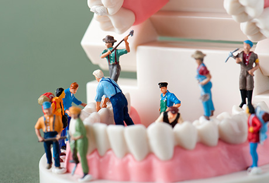
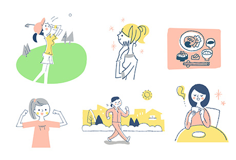
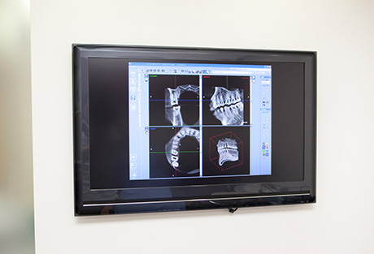
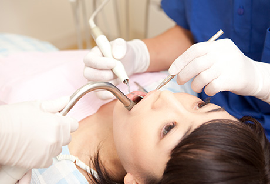
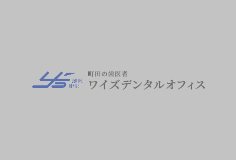

フルマウス治療とは？～フルマウス治療の必要性～

フルマウス治療とは、現在症状が現れている部分だけ治療するのではなく、なぜその症状が招かれたのか原因を追求し、お口全体がよい状態になるように行う包括的な治療のことを言います。
むし歯や歯周病によって現れている症状だけをその都度取り除く治療をしていても、原因を取り除かないかぎり再発・再治療をくり返してしまいます。そうしてダメージを重ねれば、いずれ歯は失われてしまうでしょう。
お口とは、すべての歯がそろい正しく咬み合うことで成り立っているものです。当院ではこれを念頭におき、「木を見て森を見ず」ならぬ「歯を診てお口を診ず」とならないよう、予防を含めたトータル的な診療により未来まで患者さまのお口の健康をお守りします。
フルマウス治療のメリット
- MERIT01
ケアしやすくなる - 歯並び・咬み合わせほかお口全体が整うと、毎日のブラッシングはもちろん歯科医院でのプロケアも容易になります。
- MERIT02
長期的な予防につながる - ケアしやすくなる上に唾液による自浄作用も高まり、むし歯・歯周病を長期的に予防できます。
- MERIT03
歯の寿命が延びる - 咬み合わせが整って、一部の歯に過度の負担がかかるようなこともなくなり、生涯にわたって歯を残せる可能性が高まります。
- MERIT04
全身の健康につながる - お口の健康は全身と深く関わっているため、全身の健康維持にもつながります。
- MERIT05
治療の負担を軽減できる - むし歯・歯周病になりにくいお口の環境ができ、治療が必要なくなります。同時に治療費の負担も軽減できます。
- MERIT06
正しく咀嚼できる - 咬み合わせが整って正しく咀嚼できるようになり、胃腸への負担を減らせます。また栄養の吸収もよくなります。
- MERIT07
見た目の改善につながる - 歯並びが整い、ブラッシングで汚れをきちんと落とせるようになることで、口元が美しくなります。
- MERIT08
顔つきが整う - 咬み合わせが正しくなるとお口まわりやお顔の筋肉バランスも向上し、顔つきも整います。
- MERIT09
全身のバランスがよくなる - 咬むバランスはお顔だけでなく首や肩、腰、全身へとつながり、姿勢が改善されることもあります。
当院のフルマウス治療について
当院が、お口の健康についてとくに重要だと考えているのが「咬み合わせ」です。咬み合わせが乱れているとまわりの歯に負担をかけ、むし歯や歯周病のリスクを高めて歯の寿命を縮めてしまうからです。そこで、1本1本の歯だけでなく、お口全体の咬み合わせを重視した治療をご提供しています。

また忘れてはならないのが、生活習慣です。食事や睡眠、ブラッシングのタイミングといったものも、お口の状態に大きく影響しているからです。そのため一人ひとりの生活習慣をふまえ、必要に応じて改善に向けた指導を行ったり、それぞれに適した予防ケアをご提供したりしていきます。
フルマウス治療の内容は一人ひとりのお口の状態によってまったく異なりますので、歯科用CTやマイクロスコープ、咬合器といった機器を活用し、より適した治療のご提供に努めます。お口のことは、丸ごと当院にお任せください。
フルマウス治療の流れ
STEP01 問診・検査

初めに患者様のお話を伺った上で口腔内写真やX線写真を撮影し、現在お口がどのような状態であるかトータル的に把握します。
STEP02 診断・治療計画の立案
検査結果を元に、なぜ現在の状態になってしまったかを明らかにして診断します。その上でご希望をふまえ、お口全体がよい状態になるよう一人ひとりに適したゴールを目指し、治療計画を立案します。
STEP03 カウンセリング
診断内容や治療計画について、患者様にくわしくご説明します。わからないことや不安なことがありましたら、何でもお気兼ねなくお尋ねください。納得できるまで、何度でもお話します。
STEP04 治療開始

治療計画が決定しましたたら、治療を開始します。かかる期間や通院頻度は、患者様一人ひとりのお口の状態やプランによって異なります。
STEP05 メインテナンス
治療を終えた後は、定期検診にお越しください。ご自宅でのケアと歯科医院での専門的なメインテナンスで再発を防ぎ、お口全体の健康を維持していきましょう。
症例紹介
○○の症例
|  |
テキストが入ります。テキストが入ります。テキストが入ります。テキストが入ります。テキストが入ります。テキストが入ります。テキストが入ります。テキストが入ります。テキストが入ります。テキストが入ります。テキストが入ります。
| 治療における注意点・リスク | |
|---|---|
| 治療期間 | |
| 治療費用 |
○○の症例
テキストが入ります。テキストが入ります。テキストが入ります。テキストが入ります。テキストが入ります。テキストが入ります。テキストが入ります。テキストが入ります。テキストが入ります。テキストが入ります。テキストが入ります。
| 治療における注意点・リスク | |
|---|---|
| 治療期間 | |
| 治療費用 |
むし歯・歯周病にならないために「予防歯科・定期検診」